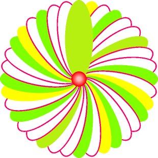

zahl = 15
if zahl % 3 == 0:
print('Die Zahl ist durch 3 teilbar.')
else:
print('Die Zahl ist nicht durch 3 teilbar.')Die Zahl ist durch 3 teilbar.Es gibt Programmieraufgaben, bei denen einzelne Anweisungen nur ausgeführt werden sollen, wenn bestimmte Bedingungen erfüllt sind. Allgemein funktioniert das nach dem Schema
WENN bedingung WAHR
MACHE
SONST
MACHEIm folgenden Beispiel wird der Computer mit Python angewiesen, zu prüfen, ob der einer Variablen zugewiesene Wert durch drei Teilbar ist. Wenn dies der Fall ist, soll der Text Die Zahl ist durch 3 teilbar. ausgegeben werden, anderenfalls Die Zahl ist nicht durch 3 teilbar..
zahl = 15
if zahl % 3 == 0:
print('Die Zahl ist durch 3 teilbar.')
else:
print('Die Zahl ist nicht durch 3 teilbar.')Die Zahl ist durch 3 teilbar.Es können auch mehrere Bedingungen nacheinander geprüft werden. Zur Demonstration wird das obige Beispiel um die Prüfung der Teilbarkeit durch fünf ergänzt.
zahl = 25
if zahl % 3 == 0:
print('Die Zahl ist durch 3 teilbar.')
elif zahl % 5 == 0:
print('Die Zahl ist durch 5 teilbar.')
else:
print('Die Zahl ist weder durch 3 noch durch 5 teilbar.')Die Zahl ist durch 5 teilbar.Allerdings werfen die beiden obigen Beispiele zusammen ein neues Problem auf: Was wenn eine Zahl sowohl durch drei als auch durch fünf Teilbar ist?
Es kann auch das vorliegen mehrerer Bedingungen gleichzeitig geprüft werden:
zahl = 15
if zahl % 3 == 0 and zahl % 5 == 0:
print('Die Zahl ist durch drei und durch fünf teilbar.')
elif zahl % 3 == 0:
print('Die Zahl ist nur durch drei teilbar.')
elif zahl % 5 == 0:
print('Die Zahl ist nur durch fünf teilbar.')
else:
print('Die Zahl ist weder durch drei noch durch fünf teilbar.')Die Zahl ist durch drei und durch fünf teilbar.Es ist auch möglich, zu prüfen, ob eine Zahl durch drei oder durch fünf teilbar ist:
zahl = 27
if zahl % 3 == 0 or zahl % 5 == 0:
print('Die Zahl ist entweder durch drei oder durch fünf teilbar (oder beides).')
else:
print('Die Zahl ist weder durch drei noch durch fünf teilbar.')Die Zahl ist entweder durch drei oder durch fünf teilbar (oder beides).Die wissenschaftliche Disziplin, die sich mit der Kombination des Wahrheitsgehalts von verschiedenen Aussagen beschäftigt, ist die Aussagelogik.
Ob die Kombination zweier Aussagen insgesamt wahr oder falsch ist, hängt vom logischen Operator ab, mit dem sie verbunden werden. Gezeigt wird dies oft in sogenannten Wahrheitstabellen. In diesen Wahrheitstabellen werden wahre Aussagen häufig mit einer 1 und falsche Aussagen mit einer 0 gekennzeichnet.
Der nicht-Operator ist ein sogenannter unärer Operator, weil er ausschliesslich einen Operanden braucht. Die Wahrheitstabelle für den nicht-Operator sieht folgendermassen aus:
| \(A\) | \(\lnot A\) oder \(\bar{A}\) |
|---|---|
| 1 | 0 |
| 0 | 1 |
Die Konjunktion (und-Operator) verbindet zwei Aussagen miteinander. Dabei ist die Aussage der beiden Aussagen im Verbund nur dann wahr, wenn auch die beiden einzelnen Aussagen wahr sind.
| \(A\) | \(B\) | \(A \land B\) |
|---|---|---|
| 1 | 1 | 1 |
| 1 | 0 | 0 |
| 0 | 1 | 0 |
| 0 | 0 | 0 |
Die Disjunktion (oder-Operator) verbindet zwei Aussagen miteinander. Dabei ist die Aussage der beiden Aussagen im Verbund wahr, sobald mindestens eine der Aussagen im Verbund wahr ist.
| \(A\) | \(B\) | \(A \lor B\) |
|---|---|---|
| 1 | 1 | 1 |
| 1 | 0 | 1 |
| 0 | 1 | 1 |
| 0 | 0 | 0 |
Angewandt auf die Blume vom letzten Mal, kann mit Bedingungen eine Blume gezeichnet werden, welche Blütenblätter in unterschiedlichen Farben aufweist.
from pytamaro.de import *weisses_blatt = ellipse(50, 150, weiss)
rosa_rand = ellipse(55, 155, rgb_farbe(255, 0, 102))
bluetenblatt_mit_rand = ueberlagere(weisses_blatt, rosa_rand)
standardbluetenblatt = fixiere(unten_mitte, bluetenblatt_mit_rand)
gruenes_blatt = ellipse(55, 155, rgb_farbe(128, 255, 0))
dreier_blatt = fixiere(unten_mitte, gruenes_blatt)
gelbes_blatt = ellipse(55, 155, rgb_farbe(255, 255, 0))
fuenfer_blatt = fixiere(unten_mitte, gelbes_blatt)
kombi_blatt = ellipse(55, 155, rgb_farbe(181, 240, 16))
kombi_blatt = fixiere(unten_mitte, kombi_blatt)
zeige_grafik(standardbluetenblatt)
zeige_grafik(dreier_blatt)
zeige_grafik(fuenfer_blatt)
zeige_grafik(kombi_blatt)anzahl_blaetter = 36
blume = kombi_blatt
for i in range(anzahl_blaetter):
winkel = i * 360 / anzahl_blaetter
standard_gedreht = drehe(winkel, standardbluetenblatt)
dreier_gedreht = drehe(winkel, dreier_blatt)
fuenfer_gedreht = drehe(winkel, fuenfer_blatt)
kombi_gedreht = drehe(winkel, kombi_blatt)
if i % 3 == 0 and i % 5 == 0:
blume = kombiniere(blume, kombi_gedreht)
elif i % 3 == 0:
blume = kombiniere(blume, dreier_gedreht)
elif i % 5 == 0:
blume = kombiniere(blume, fuenfer_gedreht)
else:
blume = kombiniere(blume, standard_gedreht)
zeige_grafik(blume)scheibe = ellipse(30, 30, rgb_farbe(255, 0, 0))
for i in range(1, 8):
tmp = ellipse(30 - 3*i, 30 - 3*i, rgb_farbe(255, i*26, i*26))
scheibe = ueberlagere(tmp, scheibe)
zeige_grafik(scheibe)blume = ueberlagere(scheibe, blume)
zeige_grafik(blume)